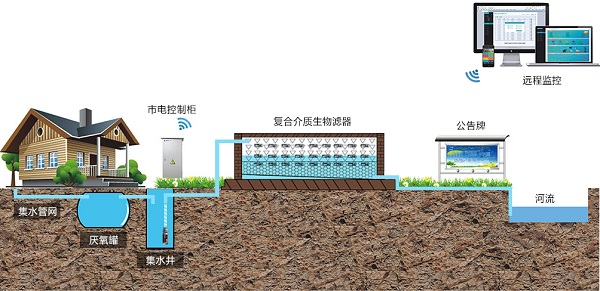

1. 复合介质污水处理工艺
复合介质生物滤器是一种先进的生活污水处理方法，该滤器内部是由多层复合介质填料按特定方式排列组成，在滤器中形成好氧与厌氧微区。污水通过布水管均匀分布于快速渗滤层中，经过初步净化之后，污水进一步下渗至混合层中，充分接触之后，污水继续向下渗透，污水中的污染物质在境料和微生物的共同作用下，得以逐步吸附、降解和转化，最终实现污水的高效净化。

复合介质填料由多种材料经科学配比组成，污水在不同功能的多种微生物作用下得到深度净化，经处理后的污水达标排放标准，可再资源化利用。复合介质生物滤器单座处理规模2-100m3/d不等，出水水质可达到一级排放标准(DB33/973-2015 )，可无动力运行。本工艺已在嘉兴桐乡市、嘉兴嘉善县、湖州安吉县、湖州南海区、杭州余杭区、1州市、江山市、温州泰顺县、安徽合肥市等地用于处理农村生活污水、农家乐污水、养殖污水等方面。尤其适用于地处偏远、管理不便、运行费用难以筹措、出水水质要求高的区域。
复合介质工艺优势
1.不需要植物参与，无植物管理，无病虫害的影响，受季节影响小;
2.运行费用低(无动力载只需提升装置)，无需药剂，无需人工值守;
3.不需要连续进水，水量水质波动对其处理效果没有影响;
4.处理效果稳定，COD,氮、磷去除率可稳定在80至90%;
5.比人工湿地省地，至少可节约1/3用地
6.不易堵塞，维护简便，运维成本低;
7.填料使用寿命长，不低于8年;
8.系统整体造价较低。
2. A2O污水处理工艺
A2O法又称AAO法，是英文Anaerobic-Anoxic-Oxic第一个字母的简称（厌氧-缺氧-好氧法），是一种常用的污水处理工艺，可用于二级污水处理或三级污水处理，以及中水回用，具有良好的脱氮除磷效果。该法是20世纪70年代，由美国的一些专家在AO法脱氮工艺基础上开发的。
A2O一体罐单元功能
1、厌氧反应器，原污水与从沉淀池排出的含磷回流污泥同步进入，本反应器主要功能是释放磷，同时部分有机物进行氨化；
2、缺氧反应器，首要功能是脱氮，硝态氮是通过内循环由好氧反应器送来的，循环的混合液量较大，一般为2Q（Q为原污水流量）；
3、好氧反应器——曝气池，这一反应单元是多功能的，去除BOD，硝化和吸收磷等均在此处进行。流量为2Q的混合液从这里回流到缺氧反应器。
4、沉淀池，功能是泥水分离，污泥一部分回流至厌氧反应器，上清液作为处理水排放
工艺特点
1、本工艺在系统上可以称为最简单的同步脱氮除磷工艺，总水力停留时间少于其他类工艺；
2、在厌氧（缺氧）、好氧交替运行条件下，丝状菌不能大量增殖，不易发生污泥丝状膨胀，SVI值一般小于100；
3、污泥含磷高，具有较高肥效；
4、运行中勿需投药，两个A段只用轻轻搅拌，以不增加溶解氧为度，运行费用低；
5、经过该工艺处理的水质可以达到一级B，如添加人工湿地继续处理，可以达到一级A的出水标准
A2O一体罐单元功能
1、厌氧反应器，原污水与从沉淀池排出的含磷回流污泥同步进入，本反应器主要功能是释放磷，同时部分有机物进行氨化；
2、缺氧反应器，首要功能是脱氮，硝态氮是通过内循环由好氧反应器送来的，循环的混合液量较大，一般为2Q（Q为原污水流量）；
3、好氧反应器——曝气池，这一反应单元是多功能的，去除BOD，硝化和吸收磷等均在此处进行。流量为2Q的混合液从这里回流到缺氧反应器。
4、沉淀池，功能是泥水分离，污泥一部分回流至厌氧反应器，上清液作为处理水排放
工艺特点
1、本工艺在系统上可以称为最简单的同步脱氮除磷工艺，总水力停留时间少于其他类工艺；
2、在厌氧（缺氧）、好氧交替运行条件下，丝状菌不能大量增殖，不易发生污泥丝状膨胀，SVI值一般小于100；
3、污泥含磷高，具有较高肥效；
4、运行中勿需投药，两个A段只用轻轻搅拌，以不增加溶解氧为度，运行费用低；
5、经过该工艺处理的水质可以达到一级B，如添加人工湿地继续处理，可以达到一级A的出水标准